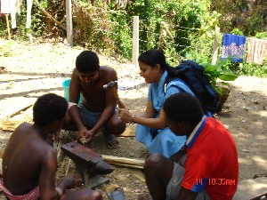

R - r
-r -र CASE का. genitive case; सम्बंध कारक. ʈʰ-e-r buo ठेर बूओ. my ears. मेरे कान. SD: grammar, व्याकरण. NT: postnominal. कारक चिह्न।.
rɑ1 रा Q परि. all; सारा; पूरा. SD: quantifier, परिमाण वाचक. SEE: rɑ2 ‘pig’ ‘सूअर राhm:{2}’.
|
 rɑ2 रा VAR: rɑː राऽ; ɽɑ ड़ा. Etym: Jeru; जेरू. N सं. pig; सूअर. SD: animal, जानवर. SEE: rɑ1 ‘all’ ‘सारा राhm:{1}’.
rɑ2 रा VAR: rɑː राऽ; ɽɑ ड़ा. Etym: Jeru; जेरू. N सं. pig; सूअर. SD: animal, जानवर. SEE: rɑ1 ‘all’ ‘सारा राhm:{1}’.
rɑbɑʈ राबाट N सं. fin, back flaps of a turtle or crocodile; कछुए या मगरमच्छ की पूंछ. SD: body part term, शारीरिक अंग शब्दावली.
rɑbitutkʰubicɔm राबीतूतखूबीचौम MORPH: rɑ-bi-tut-kʰu-bi-cɔmp. N सं. smell of the body of a male pig; नर सूअर के बदन की गंध. SD: attribute, विशेषता.
rɑbukʰu राबूखू MORPH: rɑ-bukʰu. N सं. pig (female); सूअर (मादा). SD: animal, जानवर.
rɑcɑkɑmo राचाकामो MORPH: rɑ-cɑkɑmo. N सं. old pig; बूढ़ा सूअर. SD: animal, जानवर, attribute, विशेषता.
rɑːciyokɔːrɔ राऽचीयोकौऽरौ N सं. a kind of big beetle; एक प्रकार का बड़ा कीड़ा (गुबरैला). SD: insect & invertebrate, कीट-पतंग एवं अरीढ़ जीव.
rɑcokɔro1 राचोकौरो N सं. bamboo carpenter bee; एक प्रकार की मधुमक्खी. SD: insect & invertebrate, कीट-पतंग एवं अरीढ़ जीव. SEE: rɑcokɔro2 ‘wasp’ ‘बर्र राचोकौरोhm:{2}’.
 |
rɑcokɔro2 राचोकौरो VAR: rɑcokɔrɔ राचोकौरौ. N सं. potter wasp; मिट्टी में घर बनाने वाली बर्र. Delta maxillosa. SD: insect & invertebrate, कीट-पतंग एवं अरीढ़ जीव. SEE: rocokɔro1 ‘bee’ ‘मधुमक्खी रोचोकौरोhm:{1}’.
 rɑɖirim राडीरीम MORPH: rɑ-ɖirim. N सं. pig, black; काला सूअर. SD: animal, जानवर.
rɑɖirim राडीरीम MORPH: rɑ-ɖirim. N सं. pig, black; काला सूअर. SD: animal, जानवर.
rɑjɛ राजै V क्रि. chase away; भगाना.
rɑk राक N सं. a kind of crab; एक प्रकार का केकड़ा. SD: marine, समुद्री.
rɑkɑrɑpʰil राकाराफील MORPH: rɑ-kɑrɑ-pʰil. N सं. mid-sized pig, bigger than a piglet; किशोर सूअर. SD: animal, जानवर.
rɑkoyop राकोयोप N सं. sterile woman; बांझ. SD: people, लोग.
 |
 rɑmuʈɔŋ रामूटौङ N सं. a kind of tree; एक प्रकार का पेड़. SD: flora, फूल-पत्ती.
rɑmuʈɔŋ रामूटौङ N सं. a kind of tree; एक प्रकार का पेड़. SD: flora, फूल-पत्ती.
rɑo राओ Etym: Bea; बेया. N सं. ficus; एक प्रकार का फूल. SD: flora, फूल-पत्ती.
rɑone राओने MORPH: rɑ-one. N सं. lard, pig fat; सूअर का तेल या चर्बी. SD: edible item, खाद्य सामग्री.
rɑšui राशूई V क्रि. cook; पकाना; खाना बनाना.  ʈʰɑmimi rɛpʰe birɑšuiko ठामीमी रैफे बीराशूईको. My mother cooks rice (food). मेरी मां खाना पकाती है।.
ʈʰɑmimi rɛpʰe birɑšuiko ठामीमी रैफे बीराशूईको. My mother cooks rice (food). मेरी मां खाना पकाती है।.
rɑsulu1 रासूलू MORPH: rɑ-sulu. DEIXIS डीक्सीस. after that; उसके बाद/पीछे. SD: time, समय. SEE: rɑsulu2 ‘younger’ ‘छोटा/छोटी (उम्र में) रासूलूhm:{2}’.
rɑsulu2 रासूलू MORPH: rɑ-sulu. ADJ वि. younger; उम्र में छोटा/छोटी. SD: attribute, विशेषता. SEE: rɑsulu1 ‘after that’ ‘उसके बाद/पीछे रासूलूhm:{1}’.
rɑːtɑɔlɔno राऽताऔलौनो V क्रि. slipped (he); फिसल गया (वह).
rɑtɑrɑɖiletmo राताराडीलेतमो MORPH: rɑ-tɑrɑ-ɖiletmo. N सं. urinary bladder, of pig, used as a ball; सूअर की पेशाब की थैली से बनी गेंद. SD: body part term, शारीरिक अंग शब्दावली, sports, खेल-कूद.
 rɑtɑtɑt रातातात MORPH: rɑ-tɑ-tɑt. N सं. tongue, of a pig; सूअर की जीभ. SD: body part term, शारीरिक अंग शब्दावली, animal, जानवर.
rɑtɑtɑt रातातात MORPH: rɑ-tɑ-tɑt. N सं. tongue, of a pig; सूअर की जीभ. SD: body part term, शारीरिक अंग शब्दावली, animal, जानवर.
rɑterlɔtɔbitkʰubicɔm रातेरलौतौबीतखूबीचौम MORPH: rɑ-ter-lɔtɔ-bit-kʰubi-cɔm. N सं. body odour, of the male pig; नर सूअर के बदन की गंध. SD: attribute, विशेषता.
rɑterlɔtɔekɑmɑe रातेरलौतौएकामाए MORPH: rɑ-ter-lɔtɔ-ekɑmɑe. N सं. old male pig; बूढ़ा नर सूअर. SD: animal, जानवर.
rɑterpʰile रातेरफीले MORPH: rɑ-ter-pʰile. N सं. teeth, of a pig; सूअर के दांत. SD: body part term, शारीरिक अंग शब्दावली.
 rɑtɛrco रातैरचो MORPH: rɑ-tɛr-co. N सं. head of a pig; सूअर का सिर. SD: body part term, शारीरिक अंग शब्दावली.
rɑtɛrco रातैरचो MORPH: rɑ-tɛr-co. N सं. head of a pig; सूअर का सिर. SD: body part term, शारीरिक अंग शब्दावली.
 |
 rɑtɛrlɔto रातैरलौतो MORPH: rɑ-tɛr-lɔto. N सं. male pig with teeth; दांत वाला नर सूअर. SD: animal, जानवर.
rɑtɛrlɔto रातैरलौतो MORPH: rɑ-tɛr-lɔto. N सं. male pig with teeth; दांत वाला नर सूअर. SD: animal, जानवर.
rɑtotbɛc रातोत्बैच MORPH: rɑ-tot-bɛc. N सं. hair, of a pig; सूअर के बाल. SD: body part term, शारीरिक अंग शब्दावली.
rɑːʈɑtɑli राऽटाताली MORPH: rɑː-ʈɑ-tɑli. Etym: Khora; खोरा. N सं. young domestic pig; जवान पालतू सूअर. SD: animal, जानवर.
rɑʈoirɑʈo राटोईराटो MORPH: rɑ-ʈoi-rɑʈo. N सं. thin red snake which often enters houses; पतला लाल सांप जो घर में घुस जाता है. SD: reptile, रेंगने वाले जंतु. NT: It is named so because it resembles the red rib-like structure of a pig. इसका नाम सूअर की लाल पसली की हड्डी की तरह दिखने से पड़ा है।.
rɑʈʰomoise राठोमोईसे MORPH: rɑ-ʈʰomo-ise. N सं. pig’s meat, boiled; सूअर का उबला हुआ मांस. SD: edible item, खाद्य सामग्री.
 |
rɑʈɔ राटौ N सं. midge; मच्छर. Chironomus plomosus. SD: insect & invertebrate, कीट-पतंग एवं अरीढ़ जीव. NT: Coils at the slightest touch. ज़रा-सा छूने पर ही यह सिकुड़ जाता है।.
rɑukʰu राऊखू MORPH: rɑ-ukʰu. VAR: rɑokʰu राओखू. N सं. piglet; सूअर का बच्चा. SD: animal, जानवर. NT: Piglet in the third stage of the four stages of growth. सूअर के विकास का तीसरा चरण।.
rɑvufro रावूफ्रो V क्रि. winnow; फटकना.
re रे Etym: Jeru; जेरू. VAR: rece रेचे. Etym: Bea; बेया. N सं. a kind of flower; एक प्रकार का फूल. SD: flora, फूल-पत्ती. NT: This is a flower of the rainy season. It blooms between mid-May and August-end. वर्षा ऋतु का फूल। यह फूल मध्य मई से मध्य अगस्त तक खिलता है।.
-re -रे CASE का. postposition, locative; परसर्ग, अधिकरण कारक. ʈʰi-re ठीरे. on the ground. ज़मीन पर. SD: grammar, व्याकरण.
reɑʈɔlɔ रेआटौलौ MORPH: reɑ-ʈɔlɔ. Etym: Bo. DEIXIS डीक्सीस. onset of mild rain; हल्की बारिश की शुरुआत. SD: season, मौसम.
recɔr रेचौर V क्रि. seep; रिसना.
reɡ रेग Etym: Bea; बेया. N सं. pig; सूअर. SD: animal, जानवर.
remo रेमो VAR: rɛːnmu रैऽनमू. N सं. iron; लोहा. SD: tool, औज़ार.
remotrɑpʰu रेमोत्राफू MORPH: remo-trɑ-pʰu. N सं. iron log; लोहे का बड़ा टुकड़ा. SD: tool, औज़ार.
 |
 reŋo रेङो Etym: Jeru; जेरू. VAR: rɛŋo रैङो. N सं. Ficus tree; एक प्रकार का पेड़. SD: flora, फूल-पत्ती.
reŋo रेङो Etym: Jeru; जेरू. VAR: rɛŋo रैङो. N सं. Ficus tree; एक प्रकार का पेड़. SD: flora, फूल-पत्ती.
reŋɔtɑrɑpʰu रेङौताराफू MORPH: reŋɔ-tɑrɑ-pʰu. V क्रि. encourage; उत्साहित करना.
reɲɑ रेञा VAR: reːɲɑ रेऽञा. N सं. things; वस्तुएं. SD: natural environment, प्राकृतिक वातावरण.
reo रेओ VAR: reɔ रेऔ. Etym: Bo. N सं. turtle-hunting spear; iron clasp tied with a rope to hunt turtle; कछुए का शिकार करने के लिए भाला; लोहे का बकसल जो रस्सी से बांधकर कछुए के शिकार में प्रयोग होता है. reɔ tot ibitʰuŋ रेऔ तोत ईबीथूङ. hook of the turtle-hunting spear. रेऔ का कांटा. SD: hunting & gathering, शिकार एवं संचय सम्बंधी.
reotɑtɔtcɔrɔ रेओतातौतचौरौ MORPH: reo-tɑ-tɔt-cɔrɔ. N सं. spearing practice; भाले का अभ्यास. SD: activity & event, कार्यकलाप.
reoʈɔye रेओटौये MORPH: reo-ʈɔye. N सं. lock and key; ताला और चाबी. SD: household, घरेलू.
reɔtotibitʰuŋ रेऔतोतईबीथूङ MORPH: reɔ-tot-ibitʰuŋ. N सं. iron-hook of the boat; नाव का कुण्डा. SD: boat related, नाव सम्बंधी. NT: The hook from which the rope is tied to anchor the boat. इस कुण्डे से रस्सी बांधकर नाव को किनारे पर बांधा जाता है।.
reɔʈɔe1 रेऔटौए MORPH: reɔ-ʈɔe. VAR: reɔ-ʈoi रेऔटोई. N सं. shaft of spear; भाले का डंडा. SD: hunting & gathering, शिकार एवं संचय सम्बंधी. SEE: reɔʈɔe2 ‘saw’ ‘आरी रेऔटौएhm:{2}’.
reɔʈɔe2 रेऔटौए MORPH: reɔ-ʈɔe. VAR: reɔ-ʈoi रेओटोई. N सं. saw; आरी. SD: tool, औज़ार. NT: It is used for sawing wood to make canoes. लकड़ी काटने के काम आने वाली आरी। नाव बनाने में प्रयुक्त।. SEE: reɔʈɔe1 ‘shaft of spear’ ‘लोहे की छड़; भाले का डंडा रेऔटौएhm:{1}’.
resu रेसू V क्रि. break; तोड़ना.
retɛŋ रेतैङ N सं. pimple; फुंसी. SD: illness, रोग.
 rɛbiʈ रैबीट VAR: rɑbiɖ राबीड; rebeːʈ रेबेऽट. N सं. Angler fish; एक प्रकार की मछली. SD: fish, मछली. NT: A fish which is seen at night and which has two antennae. ऐसी मछली जो मध्य रात्रि में दिखती है और जिसके सिर पर दो ऐन्टेना जैसी बनावट होती है।.
rɛbiʈ रैबीट VAR: rɑbiɖ राबीड; rebeːʈ रेबेऽट. N सं. Angler fish; एक प्रकार की मछली. SD: fish, मछली. NT: A fish which is seen at night and which has two antennae. ऐसी मछली जो मध्य रात्रि में दिखती है और जिसके सिर पर दो ऐन्टेना जैसी बनावट होती है।.
 |
 rɛfe1 रैफे VAR: rɛfɛ रैफै; rɛɸe रैफे; rɛpʰe रैफे; rɛːpʰi रैऽफी; rɛpʰi रैफी. N सं. cooked meal; food; lunch or dinner; तैयार भोजन; खाना; मध्याह्न भोजन या रात्रि भोजन.
rɛfe1 रैफे VAR: rɛfɛ रैफै; rɛɸe रैफे; rɛpʰe रैफे; rɛːpʰi रैऽफी; rɛpʰi रैफी. N सं. cooked meal; food; lunch or dinner; तैयार भोजन; खाना; मध्याह्न भोजन या रात्रि भोजन.  rɛpʰel suit nɔl रैफेल सूईत नौल. The food is well cooked. खाना अच्छी तरह पका है।. ʈʰu rɛfe-bi tɑ boiɑm ठू रैफेबी ता बोईआम. I cook food. मैं खाना बनाता हूं।. SD: edible item, खाद्य सामग्री. SEE: rɛfe2 ‘rice’ ‘चावल रैफेhm:{2}’; ebui ‘cooked food’ ‘पका हुआ खाना एबूई ’.
rɛpʰel suit nɔl रैफेल सूईत नौल. The food is well cooked. खाना अच्छी तरह पका है।. ʈʰu rɛfe-bi tɑ boiɑm ठू रैफेबी ता बोईआम. I cook food. मैं खाना बनाता हूं।. SD: edible item, खाद्य सामग्री. SEE: rɛfe2 ‘rice’ ‘चावल रैफेhm:{2}’; ebui ‘cooked food’ ‘पका हुआ खाना एबूई ’.
 |
 rɛfe2 रैफे VAR: rɛfɛ रैफै; rɛɸe रैफे; rɛpʰe रैफे; rɛːpʰi रैऽफी; rɛpʰi रैफी. N सं. rice; चावल.
rɛfe2 रैफे VAR: rɛfɛ रैफै; rɛɸe रैफे; rɛpʰe रैफे; rɛːpʰi रैऽफी; rɛpʰi रैफी. N सं. rice; चावल.  rɛfebi kɑo रैफेबी काओ. Bring the rice. चावल लाओ।. SD: edible item, खाद्य सामग्री. SEE: rɛfe1 ‘cooked meal; food; lunch or dinner’ ‘तैयार भोजन; खाना; मध्याह्न भोजन या रात्रि भोजन रैफेhm:{1}’; ebui ‘cooked food’ ‘पका हुआ खाना एबूई ’.
rɛfebi kɑo रैफेबी काओ. Bring the rice. चावल लाओ।. SD: edible item, खाद्य सामग्री. SEE: rɛfe1 ‘cooked meal; food; lunch or dinner’ ‘तैयार भोजन; खाना; मध्याह्न भोजन या रात्रि भोजन रैफेhm:{1}’; ebui ‘cooked food’ ‘पका हुआ खाना एबूई ’.
rɛfecɔfe रैफेचौफे MORPH: rɛfe-cɔfe. N सं. lots of food; ढेर सारा खाना. SD: edible item, खाद्य सामग्री.
rɛfedɑlbikɑtɔle रैफेदालबीकातौले MORPH: rɛfe-dɑl-bi-kɑ tɔle. N सं. mixture of dal and rice; चावल और दाल का मिश्रण. SD: edible item, खाद्य सामग्री.
rɛfiiji रैफीईजी MORPH: rɛfe-iji. V क्रि. eat food, lit. eat rice; भोजन करना, शाब्दिक अर्थः चावल खाना.
rɛːi रैऽई VAR: rɛi रैई. Etym: Jeru; जेरू. VAR: rɛy रैय. N सं. puberty; periods; menstrual blood; यौवनारंभ; मासिकी; मासिकी ख़ून. SD: life, जीवन.
rɛiuncikɔ रैईऊनचीकौ MORPH: rɛi-uncikɔ. N सं. commencement of menstrual periods; मासिक-धर्म होना. SD: life, जीवन.
rɛkɛɽʈʰeb रैकैड़ठेब V क्रि. scold; डांटना. o-ɛk-ertʰe-bɔm ओऐकेरथेबौम. She scolds him. वह उसे डांटती है।.
 rɛktekɑ रैक्तेका V क्रि. catch; पकड़ना.
rɛktekɑ रैक्तेका V क्रि. catch; पकड़ना.  tʰire no cɑr tɑjio cɔrbit rɛktekɑ not ʈʰe ʈʰe pʰulɔ थीरे नो चार ताजीओ चौरबीत रैक्तेका नोत ठे ठे फूलौ. If the children had caught fish, they would not have been hungry. अगर बच्चे मछली पकड़ते तो भूखे नहीं रहते।.
tʰire no cɑr tɑjio cɔrbit rɛktekɑ not ʈʰe ʈʰe pʰulɔ थीरे नो चार ताजीओ चौरबीत रैक्तेका नोत ठे ठे फूलौ. If the children had caught fish, they would not have been hungry. अगर बच्चे मछली पकड़ते तो भूखे नहीं रहते।.
rɛl रैल V क्रि. find; मिलना.
 |
rɛmocɔn रैमोचौन MORPH: rɛmo-cɔn. V क्रि. beating iron; लोहा पीटना.
rɛn रैन V क्रि. crawl of a particular kind of a snake; एक ख़ास तरह के सांप का रेंगना.
 |
rɛnkɔ रैन्कौ VAR: rɛnko रैन्को. N सं. a kind of small green pigeon; एक प्रकार का छोटा हरा कबूतर. Treron pompadora. SD: bird, पक्षी. NT: It sounds like a crying baby. इसकी आवाज़ किसी नन्हें शिशु के रोने से मिलती-जुलती है।.
rɛːnmo रैऽनमो N सं. tuberculosis; तपेदिक. SD: illness, रोग.
 rɛŋe रैङे V क्रि. pinch; चुटकी काटना.
rɛŋe रैङे V क्रि. pinch; चुटकी काटना.
rɛːŋŋɔtɑrɑːfu रैऽङङौताराऽफू N सं. anchor; लंगर. SD: boat related, नाव सम्बंधी.
rɛobol रैओबोल MORPH: rɛo-bol. N सं. rope attached to a spear; भाले से लगी रस्सी. SD: tool, औज़ार, hunting & gathering, शिकार एवं संचय सम्बंधी.
rɛoʈɔy रैओटौय MORPH: rɛo-ʈɔy. N सं. iron; लोहा. SD: hunting & gathering, शिकार एवं संचय सम्बंधी.
rɛɔ रैऔ Etym: Khora. N सं. spear, used for killing a turtle; कछुआ मारने का बल्लम. SD: tool, औज़ार.
rɛpʰedup रैफेदूप MORPH: rɛpʰe-dup. N सं. rice (raw); चावल (कच्चा). SD: cooking & food, खाना-पीना.
rɛpʰo रैफो V क्रि. climb (tree or anything else); चढ़ना (पेड़ पर या किसी अन्य चीज़ पर). u-rɛpi-bɛo ऊरैपी बैओ. he climbed the tree. वो पेड़ पर चढ़ा।.
rɛpʰu रैफू V क्रि. upload; चढ़ाना. SEE: orɛpʰo ‘mount (as in a boat)’ ‘चढ़ना (नाव में) ओरैफो ’.
 |
 rɛt रैत VAR: rɛʈ रैट. N सं. big bamboo that holds water; बड़ा बांस जिसमें पानी भरा जा सकता है. SD: flora, फूल-पत्ती. NT: Many bamboo are tied together and the cavities are used to collect water. बांसों को एक साथ बांधकर उनकी नली में पानी भरा जाता है।.
rɛt रैत VAR: rɛʈ रैट. N सं. big bamboo that holds water; बड़ा बांस जिसमें पानी भरा जा सकता है. SD: flora, फूल-पत्ती. NT: Many bamboo are tied together and the cavities are used to collect water. बांसों को एक साथ बांधकर उनकी नली में पानी भरा जाता है।.
 rɛtcɛr रैत्चैर Etym: Bo; बो. VAR: rɛʈ-cer रैटचेर. DEIXIS डीक्सीस. end of summer and the onset of rain; गर्मियों की समाप्ति और बारिश की शुरुआत. SD: season, मौसम.
rɛtcɛr रैत्चैर Etym: Bo; बो. VAR: rɛʈ-cer रैटचेर. DEIXIS डीक्सीस. end of summer and the onset of rain; गर्मियों की समाप्ति और बारिश की शुरुआत. SD: season, मौसम.
rɛtpʰɔr रैटफौर MORPH: rɛt-pʰɔr. VAR: rɛʈ-pʰɔr रैटफौर. N सं. Andamanese name for the Mayabander area; मायाबंदर का अण्डमानी नाम. SD: proper noun, व्यक्तिवाचक संज्ञा. NT: Known for its heavy overgrowth of bamboo. ऐसी जगह जहां बांस की उपज ज़्यादा होती है।.
rɛʈɛm रैटैम N सं. heat rashes; घमौरी. SD: illness, रोग.
rɛyuncikɔm रैयूनचीकौम MORPH: rɛy-uncikɔm. V क्रि. menstruate; मासिक धर्म.
 |
roɑtɑrɑcɔme रोआताराचौमे MORPH: roɑ-tɑrɑ-cɔme. Etym: Jeru; जेरू. N सं. rear, of the boat; नाव का पिछला सिरा. SD: boat related, नाव सम्बंधी, hunting & gathering, शिकार एवं संचय सम्बंधी.
robɑ रोबा VAR: ɽoɑ ड़ोआ; roː रोऽ; roːwɑ रोऽवा; roɔ रोऔ. N सं. boat; नाव. robɑ tɛr jukʰul bol beko cɔbe रोबा तैर जूखूल बोल बेको चौबे. Tie a rope at the end of the boat. नाव के सिरे में रस्सी बांधो।. SD: boat related, नाव सम्बंधी.
 roetobe रोएतोबे MORPH: roeto-be. Etym: Khora; खोरा. V क्रि. stand; खड़े होना.
roetobe रोएतोबे MORPH: roeto-be. Etym: Khora; खोरा. V क्रि. stand; खड़े होना.
rok रोक V क्रि. crush; कुचलना; रौंदना. it-bi-rok-e ईतबीरोके. Crush it. कुचल दो इसे।.
rom रोम Etym: Bo; बो. N सं. cap; ढक्कन. SD: household, घरेलू.
roːɔ रोऽऔ N सं. canoe; dongi, a kind of boat; डोंगी, एक प्रकार की नाव. SD: boat related, नाव सम्बंधी, hunting & gathering, शिकार एवं संचय सम्बंधी.
rošo रोशो N सं. sound; आवाज़. SD: people, लोग.
 |
rousu रोऊसू VAR: roːwsu रोऽवसू. N सं. a kind of black fish; काली कोक्कारी मछली. SD: fish, मछली.
 rowɑ1 रोवा VAR: rɔɑ रौआ. V क्रि. boat; नाव चलाना. SEE: rowɑ2 ‘boat; dongi’ ‘नाव; डोंगी रोवाhm:{2}’.
rowɑ1 रोवा VAR: rɔɑ रौआ. V क्रि. boat; नाव चलाना. SEE: rowɑ2 ‘boat; dongi’ ‘नाव; डोंगी रोवाhm:{2}’.
 |
 rowɑ2 रोवा VAR: rɔɑ रौआ. N सं. boat; dongi; नाव; डोंगी. rowɑ-m-bɑlobe रोवा म बालोबे. to get onto the boat. नाव में चढ़ना. ʈʰ-ɑrɑ-rɔɑ ठारारौआ. my dongi. मेरी डोंगी. SD: boat related, नाव सम्बंधी. SEE: rowɑ1 ‘boat’ ‘नाव चलाना रोवाhm:{1}’.
rowɑ2 रोवा VAR: rɔɑ रौआ. N सं. boat; dongi; नाव; डोंगी. rowɑ-m-bɑlobe रोवा म बालोबे. to get onto the boat. नाव में चढ़ना. ʈʰ-ɑrɑ-rɔɑ ठारारौआ. my dongi. मेरी डोंगी. SD: boat related, नाव सम्बंधी. SEE: rowɑ1 ‘boat’ ‘नाव चलाना रोवाhm:{1}’.
 |
rowɑɖelo रोवाडेलो MORPH: rowɑ-ɖelo. N सं. boat, small; छोटी डोंगी. SD: boat related, नाव सम्बंधी.
 rowɑkotrɑʈuoke रोवाकोत्राटूओके MORPH: rowɑ-kotrɑ-ʈuo-ke. V क्रि. make a boat with logs of wood; लकड़ी काटकर नाव बनाना.
rowɑkotrɑʈuoke रोवाकोत्राटूओके MORPH: rowɑ-kotrɑ-ʈuo-ke. V क्रि. make a boat with logs of wood; लकड़ी काटकर नाव बनाना.
rowɑtɑrɑcɔme रोवाताराचौमे MORPH: rowɑ-tɑrɑ-cɔme. N सं. stern, rear of the boat; डोंगी का पिछला सिरा. SD: boat related, नाव सम्बंधी.
 |
 rowɑtɛrco रोवातैरचो MORPH: rowɑ-tɛr-co. VAR: ɛrcɔ ऐरचौ. N सं. front of the dongi; डोंगी का अगला सिरा. SD: boat related, नाव सम्बंधी.
rowɑtɛrco रोवातैरचो MORPH: rowɑ-tɛr-co. VAR: ɛrcɔ ऐरचौ. N सं. front of the dongi; डोंगी का अगला सिरा. SD: boat related, नाव सम्बंधी.
rɔɑtɛrkʰuro रौआतैरखूरो MORPH: rɔɑ-tɛr-kʰuro. N सं. boat, big; बड़ी डोंगी. SD: boat related, नाव सम्बंधी.
 |
rɔetɛc रौएतैच MORPH: rɔe-tɛc. VAR: rɔe-tec रौएतेच. N सं. a kind of sea weed generally eaten by sea animals like the dugong; एक प्रकार की समुद्री घास जिसको समुद्री जानवर जैसे डूगोंग आदि खाते हैं. SD: flora, फूल-पत्ती.
rɔi bɑn रौई बान N सं. a kind of greenish edible crab; एक प्रकार का हरा खाद्य केकड़ा. SD: marine, समुद्री. NT: Found on the stones near the jetty. यह जेटी के पास पत्थरों पर पाया जाता है।.
rɔkʰo रौखो N सं. newborn, of pig; सूअर का बच्चा. SD: animal, जानवर.
rɔkʰɔ रौखौ VAR: rɔːxo रौऽखो. N सं. a kind of crab; एक प्रकार का केकड़ा. SD: marine, समुद्री. NT: Lives in the mangrove. It has a small hard shell. खाड़ी में पाया जाने वाला सख्त पीठ का केकड़ा।.
rɔŋɔ रौङौ N सं. a black salt-water edible snake; खारे पानी का काले रंग का खाद्य सांप. SD: reptile, रेंगने वाले जंतु.
rɔpʰe रौफे Etym: Jeru; जेरू. N सं. palm tree; ताड़ का पेड़. SD: flora, फूल-पत्ती.
rɔpuc1 रौपूच Etym: Bo; बो. N सं. head, of the family; परिवार का मुखिया. SD: kin term, सम्बंधी वाचक शब्दावली. SEE: rɔpuc2 ‘love’ ‘प्यार रौपूचhm:{2}’; rɔpuc3 ‘one who loses a sibling’ ‘जिसने अपना भाई या बहन खो दिया हो रौपूचhm:{3}’.
rɔpuc2 रौपूच Etym: Bo; Sare; बो; सारे. N सं. love; प्यार. SD: psychological predicate, मनोवैज्ञानिक विधेय. SEE: rɔpuc1 ‘head, of the family’ ‘मुखिया, परिवार का रौपूचhm:{1}’; rɔpuc3 ‘one who loses a sibling’ ‘जिसने अपना भाई या बहन खो दिया हो रौपूचhm:{3}’.
rɔpuc3 रौपूच Etym: Bo; Sare; बो; सारे. N सं. one who loses a sibling; जिसने अपना भाई या बहन खो दिया हो. SD: kin term, सम्बंधी वाचक शब्दावली, people, लोग. SEE: rɔpuc1 ‘head, of the family’ ‘मुखिया, परिवार का रौपूचhm:{1}’; rɔpuc2 ‘love’ ‘प्यार रौपूचhm:{2}’.
rɔt रौत Etym: Bo; बो. N सं. water; पानी. SD: natural environment, प्राकृतिक वातावरण.
rɔtɑrɑluk रौतारालूक MORPH: rɔ-tɑrɑ-luk. VAR: rowɑ-tɑrɑ-lu रोवातारालू. N सं. jetty, the edge where boats are anchored, tied; समुद्र का घाट जहां नाव बांधी जाती है. SD: natural environment, प्राकृतिक वातावरण.
rɔʈɔ रौटौ N सं. cricket (insect) of the rainy season; बरसात में निकलने वाला झींगुर. SD: insect & invertebrate, कीट-पतंग एवं अरीढ़ जीव.
|
 rɔːwɔ रौऽवौ VAR: ruɔ रूऔ; ɽoɔ ड़ोऔ. N सं. boat; canoe; dongi; नाव; नाव; डोंगी. SD: boat related, नाव सम्बंधी, hunting & gathering, शिकार एवं संचय सम्बंधी.
rɔːwɔ रौऽवौ VAR: ruɔ रूऔ; ɽoɔ ड़ोऔ. N सं. boat; canoe; dongi; नाव; नाव; डोंगी. SD: boat related, नाव सम्बंधी, hunting & gathering, शिकार एवं संचय सम्बंधी.
rɔːwɔʈɔːy रौऽवौटौऽय MORPH: rɔːwɔ-ʈɔːy. N सं. a kind of tree used for making boats; एक प्रकार का पेड़ जो नाव बनाने के काम आता है. SD: flora, फूल-पत्ती.
rɔy रौय Etym: Kede; केदे. ADJ वि. salty; नमकीन. SD: attribute, विशेषता.
rɔyto रौयतो MORPH: rɔy-to. Etym: Sare; सारे. ADJ वि. erect, in the state of standing; खड़े होने की स्थिति में. SD: attribute, विशेषता.
rulɛk1 रूलैक VAR: rulek रूलेक. V क्रि. glide; उड़ना. tɑjiotɔtbɛc ʈɑutɛr rulɛk ताजीओतौतबैच टाऊतैर रूलैक. The birds are gliding in the sky. पंछी हवा में उड़ रहे हैं।. SEE: rulɛk2 ‘goes into’ ‘घुसना रूलैकhm:{2}’.
rulɛk2 रूलैक VAR: rulek रूलेक. V क्रि. goes into; घुसना. SEE: rulɛk1 ‘glide’ ‘उड़ना रूलैकhm:{1}’.